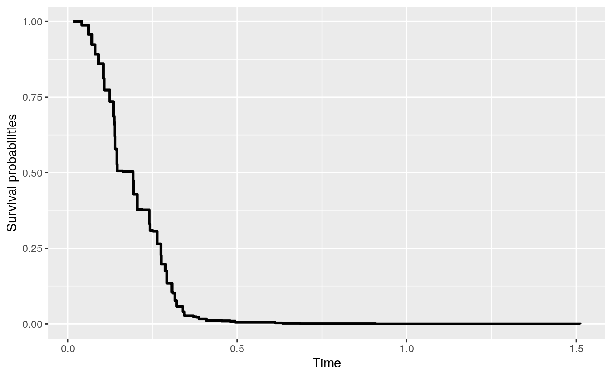

rocTree packagevignettes/rocTree-ensemble.Rmd
rocTree-ensemble.RmdIn this vignette, we demonstrate how to use the rocTree() function in rocTree package to fit the ensemble method.
We will demonstrate fitting ensembles with a simulated data prepared by the simu function.
> library(rocTree)
Registered S3 methods overwritten by 'ggplot2':
method from
[.quosures rlang
c.quosures rlang
print.quosures rlang
> set.seed(2019)
> dat <- simu(n = 100, cen = 0.25, sce = 2.1, summary = TRUE)
Summary results:
Number of subjects: 100
Number of subjects experienced death: 77
Number of covariates: 2
Time independent covaraites: z1.
Time dependent covaraites: z2.
Number of unique observation times: 100
Median survival time: 0.3213932The ensemble method can be easily called by setting ensemble = TRUE (default) when fitting a rocTree(). Ensemble method improve the variance reduction of bagging by reducing the correlation between the trees via random selection of predictors in the tree- growing process. In the following, we apply the ensemble method with fully grown trees with small terminal nodes and without pruning. We first load the survival package to enable Surv. A total of 500 survival trees can be grown as follow:
> library(survival)
> system.time(fit <- rocTree(Surv(Time, death) ~ z1 + z2, id = id, data = dat,
+ ensemble = TRUE))
user system elapsed
1.380 0.016 1.392 Some of the important parameters can be printed directly.
> fit
ROC-guided ensembles
Call:
rocTree(formula = Surv(Time, death) ~ z1 + z2, data = dat, id = id, ensemble = TRUE)
Sample size:
Number of independent variables: 100
Number of trees: 500
Split rule: dCON
Number of variables tried at each split: 2
Number of time points to evaluate CON: 20
Min. number of baseline obs. in a splittable node: 30
Min. number of baseline obs. in a terminal node: 15 The function rocTree returns an object of S3 class. The 500 survival trees are stored in fit$trees. These survival trees can be printed and plotted with the generic function print and plot, respectively. For example, the first of the 500 survival trees can be printed/plotted as below.
> print(fit, tree = 1)
ROC-guided survival tree
node), split
* denotes terminal node
Root
¦--2) z1 <= 0.51741
¦ ¦--4) z2 <= 0.60199*
¦ °--5) z2 > 0.60199*
°--3) z1 > 0.51741
¦--6) z2 <= 0.85075
¦ ¦--12) z2 <= 0.29851*
¦ °--13) z2 > 0.29851*
°--7) z2 > 0.85075*
> plot(fit, tree = 1)tree argument. Users are referred to the Package vignette on fitting time-invariant survival tree for different printing/plotting options.
Suppose we have a new data that is generated as below:
> newdat <- dplyr::tibble(Time = sort(unique(dat$Time)),
+ z1 = 1 * (Time < median(Time)),
+ z2 = runif(1))
> newdat
# A tibble: 100 x 3
Time z1 z2
<dbl> <dbl> <dbl>
1 0.0168 1 0.640
2 0.0315 1 0.640
3 0.0417 1 0.640
4 0.0606 1 0.640
5 0.0711 1 0.640
6 0.0803 1 0.640
7 0.0872 1 0.640
8 0.0901 1 0.640
9 0.102 1 0.640
10 0.105 1 0.640
# … with 90 more rowsThe predicted survival curve can be plotted with the following codes.
> pred <- predict(fit, newdat)
> pred
Fitted survival probabilities:
Time Survival
1 0.01676500 1.0000000
2 0.03145121 1.0000000
3 0.04165134 0.9881193
4 0.06056327 0.9576287
5 0.07110612 0.9234714
> plot(pred)